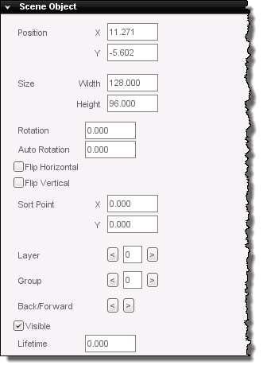
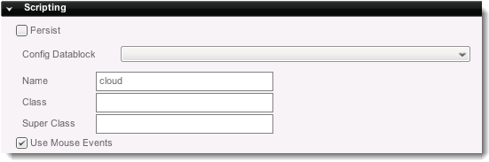
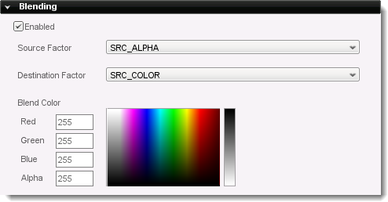

Introduction
A t2dSceneObject is the base of all other objects in Torque 2D.
Static sprites, animated sprites, scrollers, etc, all derive from this
base. What this means is that every object you add to your scene will
have a shared set of properties. This doc covers the common properties.
Creation
Any object created within the Torque 2D editor is derived from a
t2dSceneObject. If you wish to create a blank scene object, navigate to
the Create panel. Find the Scene Object object in the Other panel.
Drag and drop this into the scene where you want it to exist. Once the
scene object has been placed, it can be resized like any other object
within the Scene View.
Properties
The following properties can be modified from the editor on every object in the level.
Behaviors
Behaviors are pieces of code that give a particular object a
specific... well, behavior! Whether you want to turn a certain object
into an enemy, make it move back and forth, move to wherever the player
touches the screen or more - Behaviors allow you to very quickly add
code to an object without need to do a lot of extra work.
To select one of your behaviors, choose it from the Drop Down List and
press the green plus button. Your project must have behaviors associated
with it for this list to have anything in it.
Scene Object

- Position
- X - The position of this object upon the X axis in the scene.
- Y - The position of this object upon the X axis in the scene.
- Size
- Width - The width of this object.
- Height - The height of this object.
- Rotation - The rotation of this object, in degrees.
- Auto Rotation - The speed that this object will
automatically rotate when loaded into the scene. Positive will rotate
clockwise, negative will rotate counter clockwise.
- Flip Horizontal - If true, the object will be flipped horizontally.
- Flip Vertical - If true, the object will be flipped vertically.
- Sort Point
- X - The X position, relative to the object, that the Sort Point is located.
- Y - The Y position, relative to the object, that the Sort Point is located.
- Layer - Which depth layer that this object will exist upon.
- Group - Which object group that this object will be in.
- Back/Forward - Moves the object backwards and forwards
within the layer it is in. Use this if you have multiple objects in the
same layer and need to adjust their sorting.
- Visible - If true, the object is visible in the scene. If false, the object will not render.
- Lifetime - How long this object will exist.
Align
Modify how this object is aligned with the camera view.
-
 - Align to the left. - Align to the left.
-
 - Align to the horizontal center. - Align to the horizontal center.
-
 - Align to the top. - Align to the top.
- - Align the to vertical center.
-
 - Align to the bottom. - Align to the bottom.
-
 - Match horizontal size to horizontal viewport size. - Match horizontal size to horizontal viewport size.
- - Match vertical size to vertical viewport size.
- - Match size of object to the viewport size.
Scripting

- Persist - Set this object to persist across all levels.
- Config Datablock - The configuration datablock to associate this sceneobject with.
- Name - Name the object for referencing in script.
- Class - Link this object to a Class.
- Super Class - Link this object to a Parent Class.
- Use Mouse Events - Enable mouse callbacks on the object.
Collision

- Send Collision - This object sends collision events.
- Receive Collision - This object receives collision events.
- Send Physics - This object sends physics events.
- Receive Physics - This object receives physics events.
- Callback - This object handles collision events in script
callback functions. If you wish to do more than the simple Collision
Response defined below you must check this box.
- Detection Mode - This selects which mode you wish to use to
detect collisions.
- FULL - This uses the entire sprite boundary to detect
collisions. Ok for rectangular objects.
- CIRCLE - This uses a circle that fits the widest dimension of
your sprite to detect collisions.
- POLYGON - (Default) This uses the collision polygon defined for
the sprite. You can edit this polygon by selecting "Edit this object's
collision polygon" from the object's Selection Editor Toolbar.
- CUSTOM - This is for generating custom C++ collision response
calls and is an advanced feature.
- Collision Response -
This selects the physical behaviour you wish your objects to have when they
collide.
- CLAMP - The object will stop when it collides with another
object.
- BOUNCE - (Default) The object will bounce off of the other
object in a collision.
- STICKY - The object will stick to the collision target.
- KILL - The object will be destroyed on collision.
- RIGID - The object's behavior is calculated using basic rigid
body physics.
- Collision Layers - This determines which scene layers to use
when detecting collisions. All are selected by default.
- Collision Groups - This determines which Scene Object groups to
use when detecting collisions. All are selected by default.
Physics

- Velocity - The speed in units per second that the object is
moving in the X and Y directions.
Positive values are to the right and down, respectively, while negative values
are to the left and up, respectively. Min and Max
values determine the minimum and maximum speeds for your object.
- Angular Velocity -
- Immovable - This object cannot be moved by physics events.
- Forward Only - Allows the object to only move in its forward
direction.
- Constant Force - Applies a steady force in the desired amount
in the X and Y directions. Could be used
to simulate wind force, etc.
- Gravitic - This object has a steady downward force applied to
it, as if it were affected by gravity.
- Force Scale - Scales the magnitude of all forces applied to the
object.
- Calculate Mass and Inertia - Uses the object's defined
attributes below for determining physics reactions in a more realistic fashion.
- Mass - The object's mass.
- Inertia - The object's inertial moment.
- Density - The object's density.
- Damping - Damping force applied to motion.
- Friction - Friction when moving against other objects.
- Restitution - Value used to decide when the object has come to
rest.
Mounting
- Rotation - Mount Rotation
- Auto Rotation - Automatic Mount Rotation
World Limits
- Limit Mode - The selected Limit Mode affects what occurs when the object touches the edges of the bounds of the World Limits.
- Off - The world limits are not even tested by the object.
- Null - The world limits are tested, but no action is
taken when the object reaches the limits; it just continues on its way.
This mode is used in combination with the Callback checkbox to script
your own responses to reaching the world limits.
- Clamp - The object slides along the world limits and will not move past them.
- Bounce - The object bounces off the world limits in a simple, pong-like way and doesn't include spin.
- Sticky - The object stops all movement when it touches the world limits.
- Kill - The object deletes itself when it touches the world limits.
- Min Bounds - The minimum X and Y position of the bounds
for the World Limit. This can be edited here, however is also modified
by using the visual World Limit Editor.
- Max Bounds - The maximum X and Y position of the bounds
for the World Limit. This can be edited here, however is also modified
by using the visual World Limit Editor.
- Callback - If true, will cause a script-response to
occur when the World Limits are reached. In your script, the callback
for this object should look like this to function:
function myObject::onWorldLimit(%this, %mode, %limit)
{
// %mode will be one of the following strings:
// off, null, bounce, clamp, sticky, kill
// %limit will be one of the following strings:
// top, bottom, left, right
}
Blending
- Enabled - Enable blending for this object

- Source Factor - Source blend factor for this object. These represent constants in the format (R, G, B, A).
- ZERO - The blend factor is (0, 0, 0, 0).
- ONE - The blend factor is (1, 1, 1, 1).
- DST_COLOR - The blend factor is (R, G, B, A) of the destination pixel applied as alpha to each channel.
- ONE_MINUS_DST_COLOR - The blend factor is (1 - R, 1 - G, 1 - B, 1 - A) of the destination pixel applied as alpha to each channel.
- SRC_ALPHA - The blend factor is (A, A, A, A) of the source pixel alpha channel.
- ONE_MINUS_SRC_ALPHA - The blend factor is (1 - R, 1 - G, 1 - B, 1 - A) of the source pixel applied as alpha to each channel.
- DST_ALPHA - The blend factor is (A, A, A, A) of the destination pixel alpha channel.
- ONE_MINUS_DST_ALPHA - The blend factor is (1 - A, 1 - A, 1 - A, 1 - A) of the destination pixel alpha channel.
- SRC_ALPHA_SATURATE - The blend factor is (f, f, f, 1) where f = min(Asource, 1 - Adestination).
- Destination Blend Factor - Destination blend factor for this object. These represent constants in the format (R, G, B, A).
- ZERO - The blend factor is (0, 0, 0, 0).
- ONE - The blend factor is (1, 1, 1, 1).
- SRC_COLOR - The blend factor is (R, G, B, A) of the source pixel applied as alpha to each channel.
- ONE_MINUS_SRC_COLOR - The blend factor is (1 - R, 1 - G, 1 - B, 1 - A) of the source pixel applied as alpha to each channel.
- SRC_ALPHA - The blend factor is (A, A, A, A) of the source pixel alpha channel.
- ONE_MINUS_SRC_ALPHA - The blend factor is (1 - R, 1 - G, 1 - B, 1 - A) of the source pixel applied as alpha to each channel.
- DST_ALPHA - The blend factor is (A, A, A, A) of the destination pixel alpha channel.
- ONE_MINUS_DST_ALPHA - The blend factor is (1 - A, 1 - A, 1 - A, 1 - A) of the destination pixel alpha channel.
- Blend Color
- Red - Red Blending Value
- Green - Green Blending Value
- Blue - Blue Blending Value
- Alpha - Alpha (Transparency) Blending Value
Dynamic Fields

Each entry specifies another Dynamic Field for the object. Their
functionality should be defined in the scripts that utilize the object.
Script Representation
new t2dSceneObject() {
canSaveDynamicFields = "1";
Position = "128.769 -110.190";
size = "128.000 128.000";
CollisionMaxIterations = "3";
AlphaTestValue = "-1";
mountID = "13";
};
Conclusion
All objects in Torque 2D derive from the t2dSceneObject class, allowing for powerful, object-oriented system design. |